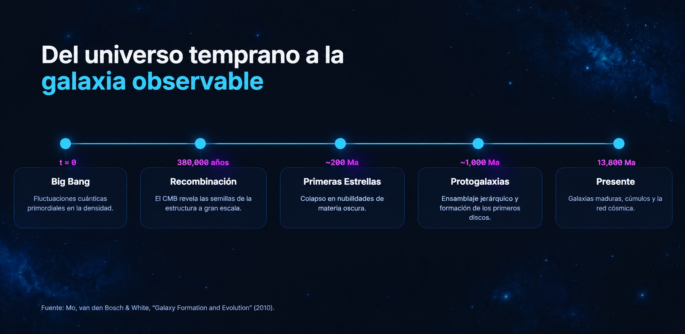
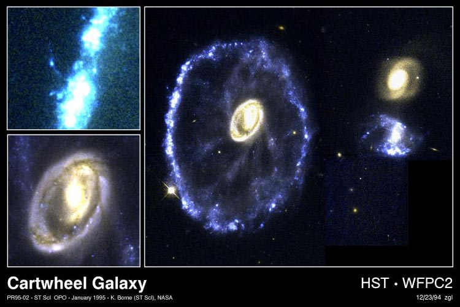
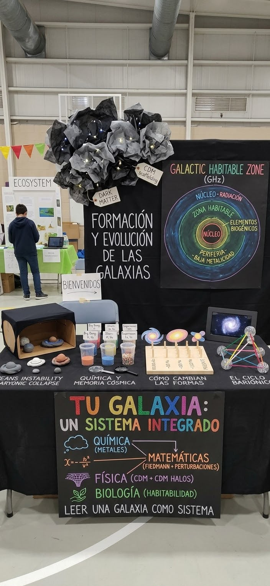

Antes de que existieran las estrellas, el universo ya estaba escribiendo la historia de las galaxias: enormes ciudades cósmicas nacidas del caos, la gravedad y el paso de miles de millones de años.
La formación de las galaxias es un proceso que comenzó hace miles de millones de años, cuando el universo era muy joven. Después del Big Bang, pequeñas diferencias en la distribución de la materia provocaron que algunas regiones tuvieran mayor densidad que otras. La gravedad hizo que estas regiones atrajeran cada vez más materia, dando origen a estructuras cada vez más grandes.
Estudiar la formación de las galaxias es importante porque nos permite comprender cómo evolucionó el universo hasta convertirse en lo que conocemos hoy. Las galaxias son el hogar de miles de millones de estrellas, sistemas planetarios y otros cuerpos celestes. Conocer su origen también nos ayuda a entender la historia de nuestra propia galaxia, la Vía Láctea, y las condiciones que permitieron la existencia de estrellas, planetas y, finalmente, vida.
En este sitio encontrarás información sobre el origen, la formación y la evolución de las galaxias, los fenómenos físicos que intervienen en estos procesos y una explicación de cómo la gravedad y la materia oscura contribuyen a construir las grandes estructuras del universo.
Explicar el proceso de formación y evolución de las galaxias desde el Big Bang hasta la actualidad, mediante el análisis de las pequeñas diferencias de densidad del universo primitivo, la influencia de los halos de materia oscura y las fusiones entre galaxias, con el fin de comprender cómo se originaron las estructuras que componen el universo.
La evolución del universo comenzó hace aproximadamente 13.800 millones de años con el Big Bang. Durante sus primeras etapas, el universo era extremadamente caliente y denso. A medida que se expandió y enfrió, se formaron las primeras partículas y posteriormente los átomos. Aproximadamente 380.000 años después del Big Bang ocurrió la recombinación, proceso en el que los electrones se unieron a los núcleos atómicos y la luz pudo viajar libremente.
Posteriormente, pequeñas diferencias de densidad que existían en el universo primitivo permitieron que algunas regiones acumularan más materia que otras. La gravedad hizo que estas regiones atrajeran progresivamente más materia, dando inicio a la formación de estructuras cósmicas.

La formación de las galaxias está relacionada principalmente con tres procesos: las pequeñas diferencias de densidad del universo primitivo, la formación de halos de materia oscura y las fusiones entre galaxias pequeñas.
En primer lugar, después del Big Bang, la materia no estaba distribuida de manera completamente uniforme. Existían pequeñas regiones con mayor densidad que otras. Estas concentraciones comenzaron a atraer más materia gracias a la gravedad, convirtiéndose en los primeros lugares donde se desarrollaron las estructuras cósmicas.
En segundo lugar, la materia oscura, que no emite ni absorbe luz de manera detectable, desempeñó un papel fundamental. Esta materia se agrupó formando grandes estructuras llamadas halos de materia oscura. Su gravedad permitió atraer y mantener el gas dentro de estas regiones, facilitando el nacimiento de las primeras estrellas y galaxias.
Finalmente, las galaxias pequeñas comenzaron a interactuar y fusionarse entre sí. Estas fusiones aumentaron su tamaño y modificaron su forma, estructura y composición. De esta manera, algunas galaxias crecieron hasta convertirse en grandes sistemas como la Vía Láctea.

Las galaxias no permanecen iguales a lo largo del tiempo. Su estructura cambia debido a la formación de nuevas estrellas, el consumo y enfriamiento del gas, las explosiones de supernovas y las interacciones gravitacionales con otras galaxias. Algunas desarrollan formas espirales, otras presentan estructuras elípticas y algunas tienen formas irregulares.
Un ejemplo es la Vía Láctea, que continúa evolucionando mediante interacciones con galaxias cercanas. Estos procesos demuestran que el universo es dinámico y que las galaxias siguen transformándose incluso miles de millones de años después de su formación.
Algunas cifras permiten comprender la magnitud temporal y física del proceso de formación y evolución de las galaxias:
13.800 millones de años
Edad aproximada del universo desde el Big Bang.
380.000 años
Tiempo aproximado después del Big Bang en el que ocurrió la recombinación y la luz comenzó a viajar libremente.
200-400 millones de años
Intervalo aproximado en el que pudieron surgir las primeras estrellas del universo.
100.000 años luz
Diámetro aproximado de la Vía Láctea, nuestra galaxia.
La ecuación de Friedmann es una fórmula de la cosmología que permite describir cómo se expande o se contrae el universo a lo largo del tiempo. Relaciona la velocidad de expansión con la cantidad de materia y energía que contiene el universo, la curvatura del espacio y la energía oscura.
En palabras sencillas, esta ecuación permite comprender que la expansión del universo depende de lo que contiene y de sus propiedades físicas. Por ejemplo, la gravedad de la materia tiende a frenar la expansión, mientras que la energía oscura está relacionada con su aceleración. Aunque no describe directamente la formación de una galaxia individual, ayuda a comprender el contexto general en el que estas estructuras surgieron y evolucionaron.
H² = (ȧ/a)² = 8πGρ/3 - kc²/a² + Λc²/3
Describe cómo se expande el universo según su contenido y curvatura.
Explora una representación tridimensional de una galaxia espiral. Las partículas representan estrellas distribuidas en varios brazos alrededor de un núcleo central. Puedes modificar la apertura de los brazos mediante el control deslizante y observar cómo cambia su forma.
Valor: 1.5
Nota: esta simulación es una representación visual simplificada de la estructura de una galaxia espiral. No reproduce una evolución cosmológica completa ni calcula las interacciones gravitacionales reales.
Tomamos la decisión de desarrollar una simulación en la cual se podrá observar de manera simplificada el proceso de formación de las galaxias a medida que transcurre el tiempo. En ella, las partículas representan la materia del universo y su interacción gravitacional permite visualizar cómo comienzan a agruparse para formar estructuras cada vez más grandes.
La simulación y el sitio web se complementan para explicar el fenómeno desde dos perspectivas: una representación visual e interactiva del proceso y una explicación científica de los fenómenos que lo hacen posible.
| La simulación muestra | El sitio web muestra |
|---|---|
| Agrupación de partículas con el paso del tiempo. | Explicación de las diferencias iniciales de densidad. |
| Formación de estructuras cada vez más grandes. | Influencia de los halos de materia oscura. |
| Interacción y agrupación de partículas. | Fusiones de galaxias y evolución de sus estructuras. |
